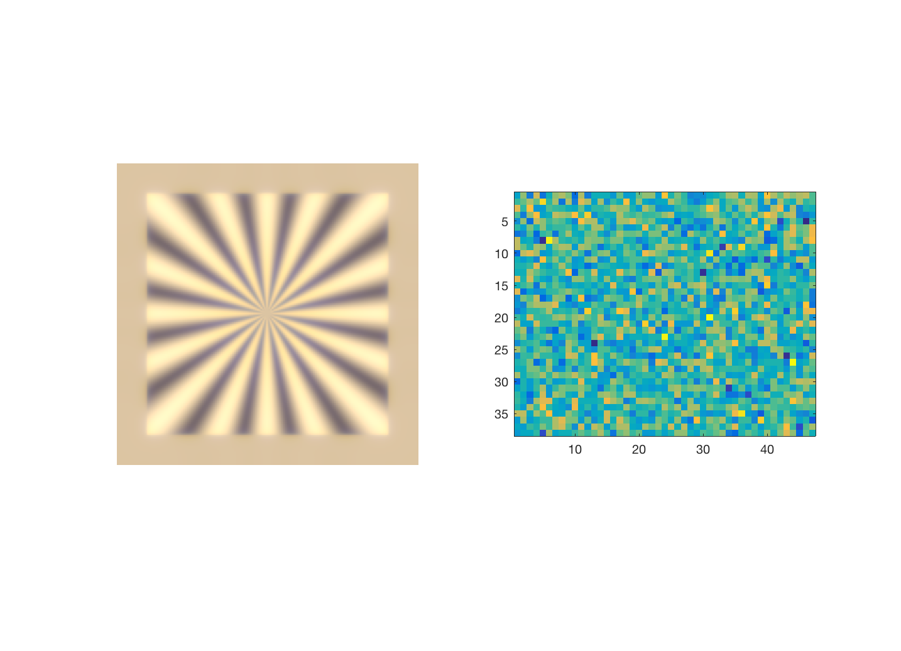

Use the coneMosaic object to simulate responses of foveal RGC mosaic
This tutorial generates RGC responses to the isetbio rings and rays stimulus with eye movements.
* Create a scene * Create an optical image * Calculate a cone mosaic of the fixed scene with eye movements * Calculate bipolar * Calculate RGC for on parasol
Based on t_coneMosaic.
7/2016 JRG HJ BW (c) isetbio team
Contents
Initialize parameters
% clx; ieInit; % Initialize parameters of simulated retinal patch ecc = [0,0]*1e-3; % Cone mosaic eccentricity in meters from fovea fov = 2; % Scene Field of view in degrees emLength = 400; % Eye movement frames sceneType = 'rings rays'; cellType = 'on parasol'; % cellType = 'off midget'; osFlag = 0; % 0 for osLinear, 1 for osBioPhys
Get iStim structure for rings and rays movie from RDT - why so slow?
The RDT seems to take longer than creating the stimulus locally
rdt = RdtClient('isetbio'); rdt.crp('/resources/data/istim');
switch osFlag case 0 % osLinear data = rdt.readArtifact('ringsRays_cMosaic', 'type', 'mat'); case 1 % osBioPhys data = rdt.readArtifact('ringsRays_cMosaic_osBioPhys', 'type', 'mat'); end
% iStim = data.iStim; clear data; cMosaic = data.cMosaic;
Build a scene and oi for computing
s = sceneCreate(sceneType); s = sceneSet(s,'fov',fov); s = sceneAdjustLuminance(s,10); vcAddObject(s); oi = oiCreate; oi = oiCompute(oi,s); vcAddObject(oi); % oiWindow;
Build a default cone mosaic and compute the OI
if osFlag % osBioPhys osCM = osBioPhys(); cMosaic = coneMosaic('center',[0 0]*1e-3,'os',osCM); % Create the object else % osLinear cMosaic = coneMosaic('center',[0 0]*1e-3); % Create the object end % % Set cone mosaic size % cMosaic.rows = 50; cMosaic.cols = 60; % cMosaic.rows = 100; cMosaic.cols = 120; cMosaic.rows = 144; cMosaic.cols = 176; cMosaic.emGenSequence(emLength); cMosaic.compute(oi); cMosaic.computeCurrent(); % Show the window % cMosaic.window; % Examine the outer segment current % cMosaic.plot('movie absorptions','vname','deleteme.avi','step',5);
Random noise added.
Compute the bipolar response
bp = bipolar(cMosaic); bp.set('sRFcenter',1); bp.set('sRFsurround',1); bp.compute(cMosaic);
Set other RGC mosaic parameters
clear params innerRetinaSU params.name = 'macaque phys'; params.eyeSide = 'left'; params.eyeRadius = sqrt(sum(ecc.^2)); % params.fov = fov; params.eyeAngle = 0; ntrials = 0; % Create RGC object innerRetinaSU = ir(bp, params); innerRetinaSU.mosaicCreate('type',cellType,'model','GLM'); nTrials = 1; innerRetinaSU = irSet(innerRetinaSU,'numberTrials',nTrials);
Compute the inner retina response
innerRetinaSU = irCompute(innerRetinaSU, bp);
lastTime = innerRetinaSU.mosaic{1}.get('last spike time');
Warning: Constant data, hence zero contrast.
Make the PSTH movie
innerRetinaSU.mosaic{1}.set('dt',1);
psth = innerRetinaSU.mosaic{1}.get('psth');
clear params
% params.vname = fullfile(isetbioRootPath,'local','vernier.avi');
param.FrameRate = 5; params.step = 2; params.show = true;
% % View movie of RGC linear response
% vcNewGraphWin; ieMovie(innerRetinaSU.mosaic{1}.responseLinear);
% View movie of PSTH for mosaic
steadyStateFrame = 40;
% vcNewGraphWin; ieMovie(psth(:,:,steadyStateFrame:end),params);
% % View average of PSTH movie
vcNewGraphWin;
subplot(121);
oiShowImage(oi);
subplot(122);
imagesc(mean(psth,3)); axis image
% % Plots of RGC linear response and OS current
% vcNewGraphWin; plot(RGB2XWFormat(innerRetinaSU.mosaic{1}.responseLinear)')
% vcNewGraphWin; plot(RGB2XWFormat(iStim.cMosaic.current)')
 Make GIF
params.vname = [isetbioRootPath '/local/ringsRaysTest.gif']; % ieGIF(psth(:,:,steadyStateFrame:end),params);